二叉树是一种常见的数据结构，并且有很多算法都是基于二叉树的。一般解决二叉树问题的算法都基于递归，递归一般多见于树、图这样的结构中，多见于深度优先遍历相关的题。在解决一个问题的时候，可以将这个问题转化为同样执行过程的子问题，然后子问题再转化为子子问题，不断递归下去。递归需要注意退出条件，同时不要一开始就陷入细节，要重点抓问题与子问题的关系，既见宏观也见围观。
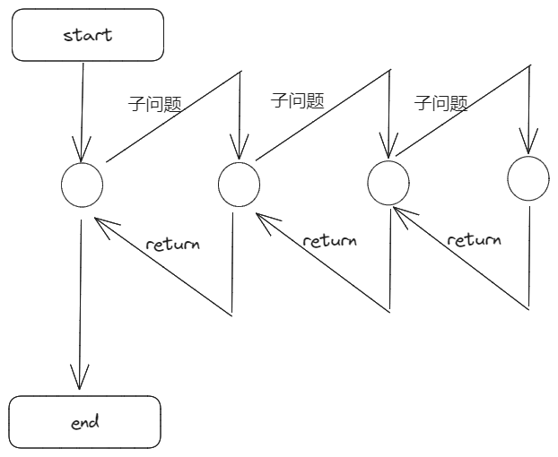
一个简单的递归
通过下面这道题，来写一个简单的递归。
第104题 求二叉树的深度
https://leetcode.cn/problems/maximum-depth-of-binary-tree/submissions/443867506/
一个经典的递归问题，整棵树的高度是由其左子树和右子树的高度+1而来的，故递归求解左右子树高度，注意退出条件。
时间复杂度$O(n)$,空间复杂度$O(n)$
1 2 3 4 5 6 7 8 9 10 11 12 13 14 15 16 17 18 19 20 21 func maxDepth (root *TreeNode) int if root == nil { return 0 } left := maxDepth(root.Left) right := maxDepth(root.Right) if left > right { return left+1 } else { return right+1 } }
二叉树递归 判断树型
递归在二叉树中经常用以判断树型以及树的一些特点，例如以下几题
第100题 相同的树
https://leetcode.cn/problems/same-tree/
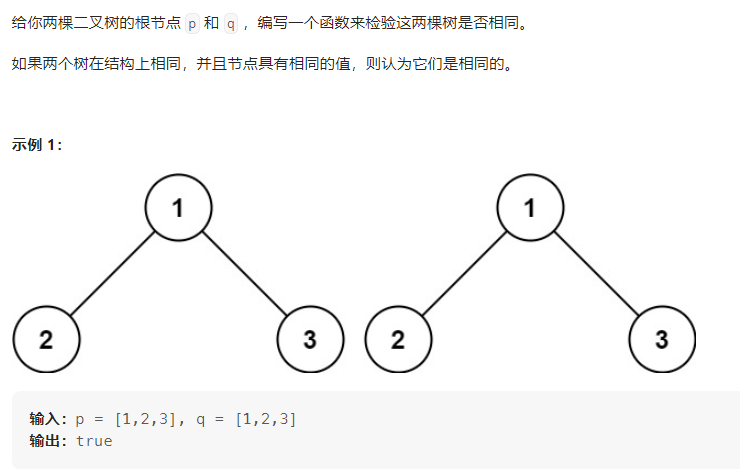
递归比较两个树的节点，子问题为比较左右子树的值是否相等，时间复杂度$O(n)$,空间复杂度$O(n)$
1 2 3 4 5 6 7 8 9 func isSameTree (p *TreeNode, q *TreeNode) bool if p == nil && q == nil { return true } if p != nil && q != nil { return p.Val == q.Val && isSameTree(p.Left, q.Left) && isSameTree(p.Right, q.Right) } return false }
第101题 对称二叉树
https://leetcode.cn/problems/symmetric-tree/
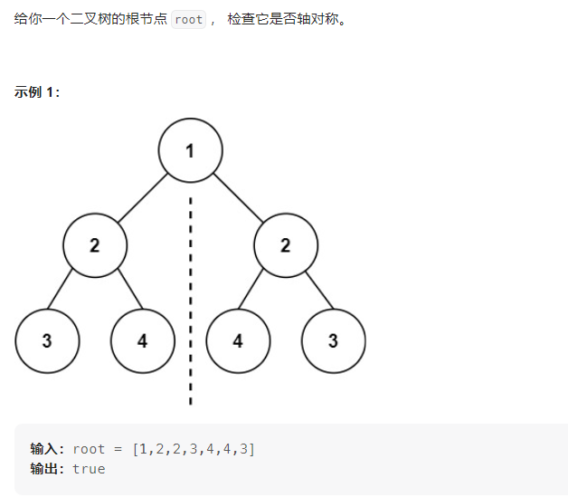
这题乍一看好像递归有点麻烦，其实不然，可以看作是root的左右两个子树，进行相同的树的比较（见上一题），只不过指针指向不同，一个往左一个往右即可。
时间复杂度$O(n)$,空间复杂度$O(n)$
1 2 3 4 5 6 7 8 9 10 11 12 13 14 15 16 17 18 19 20 21 22 23 24 25 26 func isSymmetric (root *TreeNode) bool if root == nil { return true }else { return judge(root.Left, root.Right) } } func judge (node1, node2 *TreeNode) bool if node1 == nil && node2 == nil { return true } if node1 == nil || node2 == nil { return false } return node1.Val == node2.Val && judge(node1.Left, node2.Right) && judge(node1.Right, node2.Left) }
此外，这题除了用递归来做，可以用先序后序遍历来做，也可以用队列来做。
我写的队列可能比较复杂，仅贴在这里供参考一下，无非是结构的判断和节点值的判断。
时间复杂度$O(n)$,空间复杂度$O(n)$
1 2 3 4 5 6 7 8 9 10 11 12 13 14 15 16 17 18 19 20 21 22 23 24 25 26 27 28 29 30 31 32 33 34 35 36 37 38 39 40 41 42 43 44 45 46 47 48 func isSymmetric (root *TreeNode) bool if root == nil { return true } if root.Left == nil && root.Right == nil { return true } if root.Left == nil || root.Right ==nil { return false } queueLeft := []*TreeNode{} queueRight := []*TreeNode{} queueLeft = append (queueLeft, root.Left) queueRight = append (queueRight, root.Right) for len (queueLeft) != 0 && len (queueRight) != 0 { tempLeft := queueLeft[0 ] tempRight := queueRight[0 ] if tempLeft.Val != tempRight.Val { return false } leftCount, rightCount := 0 , 0 if tempLeft.Left != nil { queueLeft = append (queueLeft, tempLeft.Left) leftCount += 1 } if tempLeft.Right != nil { queueLeft = append (queueLeft, tempLeft.Right) rightCount += 1 } if tempRight.Right != nil { queueRight = append (queueRight, tempRight.Right) leftCount -= 1 } if tempRight.Left != nil { queueRight = append (queueRight, tempRight.Left) rightCount -= 1 } if leftCount != 0 || rightCount != 0 { return false } queueLeft = queueLeft[1 :] queueRight = queueRight[1 :] } if len (queueLeft) == 0 && len (queueRight) == 0 { return true } return false }
第110 题 平衡二叉树
https://leetcode.cn/problems/balanced-binary-tree/
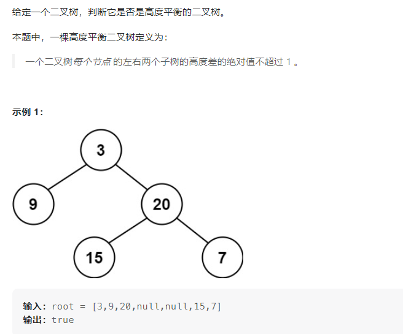
这一题和求深度一样，只不过在每个节点多一个判断条件，左子树和右子树高度差的绝对值小于等于1即可。子问题在于求左右子树的高度，而左右子树的高度又与左子子树、右子子树相关，递归求解。
当然这一题用了go语言闭包函数的特点，抽离出来也可以，见写法二。
时间复杂度$O(n)$,空间复杂度$O(n)$
1 2 3 4 5 6 7 8 9 10 11 12 13 14 15 16 17 18 19 20 21 22 23 24 25 26 27 28 29 30 31 32 33 34 35 36 37 38 39 40 41 42 43 44 45 46 47 48 49 50 51 52 53 54 55 56 57 58 59 func isBalanced (root *TreeNode) bool if root == nil { return true } stop := false balance := true var depth func (root *TreeNode) int depth = func (root *TreeNode) int if root == nil || stop{ return 0 } leftDepth := depth(root.Left) rightDepth := depth(root.Right) if value := leftDepth - rightDepth; value < -1 || value > 1 { balance = false stop = true } return max(leftDepth, rightDepth)+1 } depth(root) return balance } func max (a, b int ) int if a<b{ return b }else { return a } } func isBalanced (root *TreeNode) bool res := balance(root) if res != -1 { return true } return false } func balance (node *TreeNode) (int ) if node == nil { return 0 } left := balance(node.Left) right := balance(node.Right) if math.Abs(float64 (left - right)) > 1 || left == -1 || right == -1 { return -1 }else { if left > right{ return left + 1 }else { return right + 1 } } }
第199题 二叉树的右视图
https://leetcode.cn/problems/binary-tree-right-side-view/
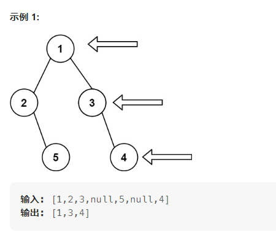
递归实现方法
通过带一个深度参数来递归求解，右子树优先，然后判断是否为第一次到达这个深度即可。
1 2 3 4 5 6 7 8 9 10 11 12 13 14 15 16 func rightSideView (root *TreeNode) []int res := []int {} var dfs func (*TreeNode, int ) dfs = func (root *TreeNode, depth int ) if root == nil { return } if depth == len (res) { res = append (res, root.Val) } dfs(root.Right, depth+1 ) dfs(root.Left, depth+1 ) } dfs(root, 0 ) return res }
队列实现方法，把每一层从右至左放进队列中，每次队列的第一个就是最右边的节点，然后将这层节点全部取出。
1 2 3 4 5 6 7 8 9 10 11 12 13 14 15 16 17 18 19 20 21 22 23 24 25 func rightSideView (root *TreeNode) []int temp := []int {} if root==nil { return temp } queue1 := []*TreeNode{} queue1 = append (queue1, root) for len (queue1) != 0 { temp = append (temp, queue1[0 ].Val) m := len (queue1) for m > 0 { p := queue1[0 ] if p.Right != nil { queue1 = append (queue1, p.Right) } if p.Left != nil { queue1 = append (queue1, p.Left) } queue1 = queue1[1 :] m-- } } return temp }
二叉树的遍历
二叉树的遍历是二叉树的基础问题，许多关于二叉树的难题都可以依据二叉树的遍历解决。二叉树的遍历分为先序、中序、后序以及层次遍历，通过下面这道题来看一下。
###第98题 验证二叉搜索树
https://leetcode.cn/problems/validate-binary-search-tree/
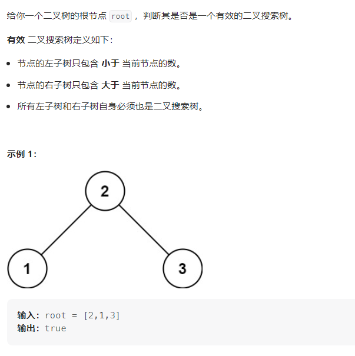
解法一：先序遍历
由于是二叉搜索树，所以通过先序遍历的序列一定是有序的，先访问的节点的值一定是小于后访问节点的值。
时间复杂度$O(n)$,空间复杂度$O(n)$
1 2 3 4 5 6 7 8 9 10 11 12 13 14 15 16 17 18 func isValidBST (root *TreeNode) bool isBST := true lastValue := math.MinInt var isValid func (*TreeNode) isValid = func (root *TreeNode) if root == nil || !isBST{ return } isValid(root.Left) if root.Val <= lastValue{ isBST = false } lastValue = root.Val isValid(root.Right) } isValid(root) return isBST }
解法二：中序遍历
中序遍历带的参数为一个范围，后续访问的节点需要满足这个范围。
1 2 3 4 5 6 7 8 9 10 11 12 13 func isValidBST (root *TreeNode) bool var isValid func (*TreeNode, int , int ) bool isValid = func (root *TreeNode, min int , max int ) bool if root == nil { return true } if root.Val <= min || root.Val >= max { return false } return isValid(root.Left,min,root.Val) && isValid(root.Right,root.Val,max) } return isValid(root, math.MinInt, math.MaxInt) }
时间复杂度$O(n)$,空间复杂度$O(n)$
解法三：后序遍历
后序遍历遵循左 右 中，故对于每个节点，在访问它时它的左右子树已经访问完毕，此时只需要知道左右子树的范围（左右子树的最小值、最大值）即可。
感觉这样写还挺复杂的，推荐用解法一和解法二，不好理解的话可以看一下灵神的视频。https://www.bilibili.com/video/BV14G411P7C1/?spm_id_from=333.788&vd_source=9ac67fc51991e69b7ff04375142fa239
时间复杂度$O(n)$,空间复杂度$O(n)$
1 2 3 4 5 6 7 8 9 10 11 12 13 14 15 16 17 18 19 20 21 22 23 24 25 26 27 28 29 30 31 32 33 func isValidBST (root *TreeNode) bool var dfs func (*TreeNode) (int , int ) dfs = func (root *TreeNode) (int , int ) if root == nil { return math.MaxInt, math.MinInt } lmin, lmax := dfs(root.Left) rmin, rmax := dfs(root.Right) if root.Val <= lmax || root.Val >= rmin{ return math.MinInt, math.MaxInt } return min(root.Val, lmin), max(root.Val, rmax) } _, a := dfs(root) return a != math.MaxInt } func min (a, b int ) int if a<b{ return a }else { return b } } func max (a, b int ) int if a<b{ return b }else { return a } }
空间复杂度为1的中序遍历——Morris遍历
Morris遍历其实是一种线索化二叉树的过程，能够将二叉树非递归的中序遍历的空间复杂度变为O(1)
Morris算法过程如下（假设当前遍历到的节点为x）：
如果x无左孩子，则将x节点的值加入答案中，然后访问x的右孩子，即x=x.right
如果x有左孩子，则令另一指针prev = x.left，然后找到prev的最右孩子，即不断令prev = prev.right，直至以下条件
如果prev.right 为空，则令prev.right = x，即prev的右指针指向x，再令x = x.left
如果prev.right 为x，则说明此时已经遍历完了x的左子树，可以直接将prev.right 置空（置空的话就还原了这棵树，不置空的话就线索化了这颗二叉树），将x的值加入答案中，然后遍历x的右子树，x = x.right
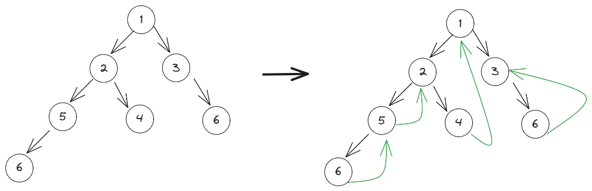
如上图，如果右指针未置空，一棵树的指针变化。
时间复杂度$O(n)$,空间复杂度$O(1)$
1 2 3 4 5 6 7 8 9 10 11 12 13 14 15 16 17 18 19 20 21 22 23 24 func inorderTraversal (root *TreeNode) (ret []int ) for root!=nil { if root.Left != nil { predecessor := root.Left for predecessor.Right != nil && predecessor.Right != root{ predecessor = predecessor.Right } if predecessor.Right == nil { predecessor.Right = root root = root.Left }else { ret = append (ret, root.Val) predecessor.Right = nil root = root.Right } }else { ret = append (ret, root.Val) root = root.Right } } return }
第99题 恢复二叉搜索树
https://leetcode.cn/problems/recover-binary-search-tree/
题目描述：
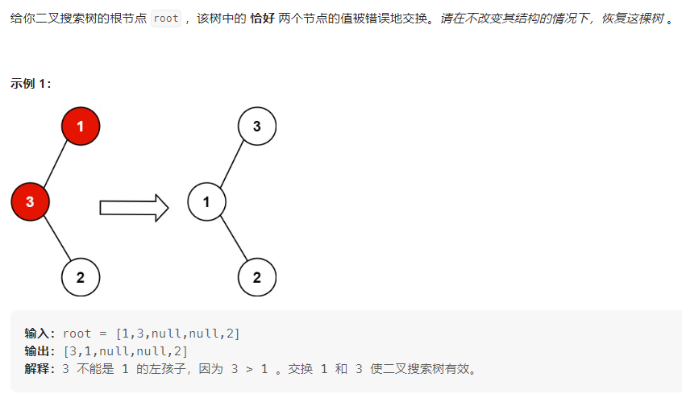
题解：利用上面的Morris遍历，找到异常节点记录下来，然后修改其值即可。
时间复杂度$O(n)$,空间复杂度$O(1)$
1 2 3 4 5 6 7 8 9 10 11 12 13 14 15 16 17 18 19 20 21 22 23 24 25 26 27 28 29 30 31 32 33 34 35 36 37 38 39 func recoverTree (root *TreeNode) var x, y, predecessor, pred *TreeNode for root != nil { if root.Left != nil { predecessor = root.Left for predecessor.Right != nil && predecessor.Right != root{ predecessor = predecessor.Right } if predecessor.Right == nil { predecessor.Right = root root = root.Left }else { if pred != nil && root.Val < pred.Val{ y = root if x == nil { x = pred } } pred = root predecessor.Right = nil root = root.Right } }else { if pred != nil && root.Val < pred.Val{ y = root if x == nil { x = pred } } pred = root root = root.Right } } x.Val, y.Val = y.Val, x.Val return }
公共祖先问题
###第236题 二叉树的公共祖先
https://leetcode.cn/problems/lowest-common-ancestor-of-a-binary-tree/
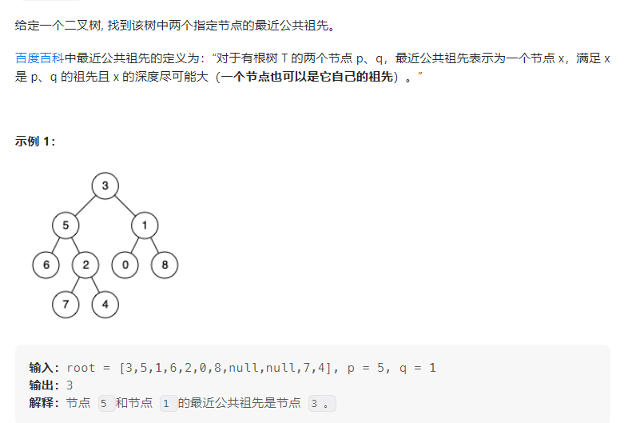
通过遍历二叉树，记录到达两个目标点时经过的节点值，将两组节点值存储在两个数组中，然后找这两个数组的最后的相等的值即为公共祖先。注意遍历的顺序为先序遍历。
时间复杂度$O(n)$,空间复杂度$O(n)$
1 2 3 4 5 6 7 8 9 10 11 12 13 14 15 16 17 18 19 20 21 22 func lowestCommonAncestor (root, p, q *TreeNode) (res *TreeNode ) path := [][]*TreeNode{} temp := []*TreeNode{} var findPath func (*TreeNode) findPath = func (node *TreeNode) if node == nil { return } temp = append (temp, node) defer func () len (temp)-1 ]}() if node.Val == p.Val || node.Val == q.Val{ path = append (path,append ([]*TreeNode{nil }, temp...)) } findPath(node.Left) findPath(node.Right) } findPath(root) for i:=0 ; i<len (path[0 ]) && i<len (path[1 ]) && path[0 ][i] == path[1 ][i]; i++{ res = path[0 ][i] } return }
###第235题 二叉搜索树的最近公共祖先
https://leetcode.cn/problems/lowest-common-ancestor-of-a-binary-search-tree/
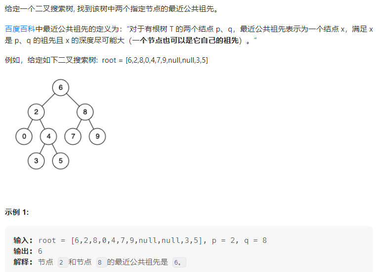
两种解法，一次遍历和两次遍历，先说两次遍历。
两次遍历：分别找出从根节点到指定节点的路径，找到两个路径中最后一个相同的点，即为最近公共祖先。
时间复杂度$O(n)$,空间复杂度$O(n)$
1 2 3 4 5 6 7 8 9 10 11 12 13 14 15 16 17 18 19 20 21 22 func lowestCommonAncestor (root, p, q *TreeNode) (res *TreeNode) pathp := findPath(root, p.Val) pathq := findPath(root, q.Val) for i:=0 ; i<len (pathp) && i<len (pathq) && pathq[i]==pathp[i]; i++{ res = pathq[i] } return } func findPath (root *TreeNode, value int ) (path []*TreeNode) node := root for node.Val != value{ path = append (path, node) if value < node.Val{ node = node.Left }else if value > node.Val{ node = node.Right } } path = append (path, node) return }
一次遍历，找到分叉点，即node.Val处于两个指定节点的中间位置
时间复杂度$O(n)$,空间复杂度$O(1)$
1 2 3 4 5 6 7 8 9 10 11 12 13 14 func lowestCommonAncestor (root, p, q *TreeNode) (res *TreeNode) node := root for { if node.Val > p.Val && node.Val > q.Val{ node = node.Left }else if node.Val < p.Val && node.Val < q.Val{ node = node.Right }else { res = node break } } return }
##二叉树的层次遍历
二叉树的层次遍历用一个队列实现即可，将当前节点的左右孩子入队，然后出队，访问队首元素的值，再重复这个过程直到队列为空即可。
第102 二叉树层序遍历
https://leetcode.cn/problems/binary-tree-level-order-traversal/description/
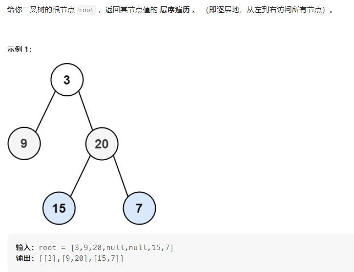
1 2 3 4 5 6 7 8 9 10 11 12 13 14 15 16 17 18 19 20 21 22 23 24 25 26 27 28 29 30 31 32 func levelOrder (root *TreeNode) (res [][]int ) if root == nil { return } queue := []*TreeNode{} queue = append (queue, root) for len (queue) != 0 { length := len (queue) temp := make ([]int , length) for i:=0 ; i < length; i++{ nowNode := queue[i] if nowNode.Left != nil { queue = append (queue, nowNode.Left) } if nowNode.Right != nil { queue = append (queue, nowNode.Right) } temp[i] = nowNode.Val } queue = queue[length:] res = append (res, temp) } return }
第103题 二叉树锯齿形层序遍历
https://leetcode.cn/problems/binary-tree-zigzag-level-order-traversal/description/
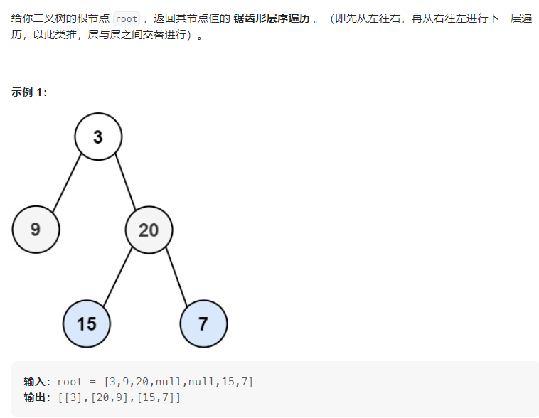
与层次遍历一样，只不过加入数组的顺序变了一下。
时间复杂度$O(n)$,空间复杂度$O(n)$
1 2 3 4 5 6 7 8 9 10 11 12 13 14 15 16 17 18 19 20 21 22 23 24 25 26 27 28 29 30 31 32 33 34 35 36 37 38 39 40 func zigzagLevelOrder (root *TreeNode) (ret [][]int ) if root == nil { return } queue := []*TreeNode{} queue = append (queue, root) orderFromLeft := true for len (queue) != 0 { length := len (queue) tempArr := make ([]int , length) for i:=0 ; i< length; i++{ nowNode := queue[i] if nowNode.Left != nil { queue = append (queue, nowNode.Left) } if nowNode.Right != nil { queue = append (queue, nowNode.Right) } } for i:=0 ; i < length; i++{ if orderFromLeft{ tempArr[i] = queue[0 ].Val }else { tempArr[length-i-1 ] = queue[0 ].Val } queue = queue[1 :] } ret = append (ret, append ([]int {}, tempArr...)) orderFromLeft = !orderFromLeft } return }
二叉树其他问题
###不同的二叉搜索树1
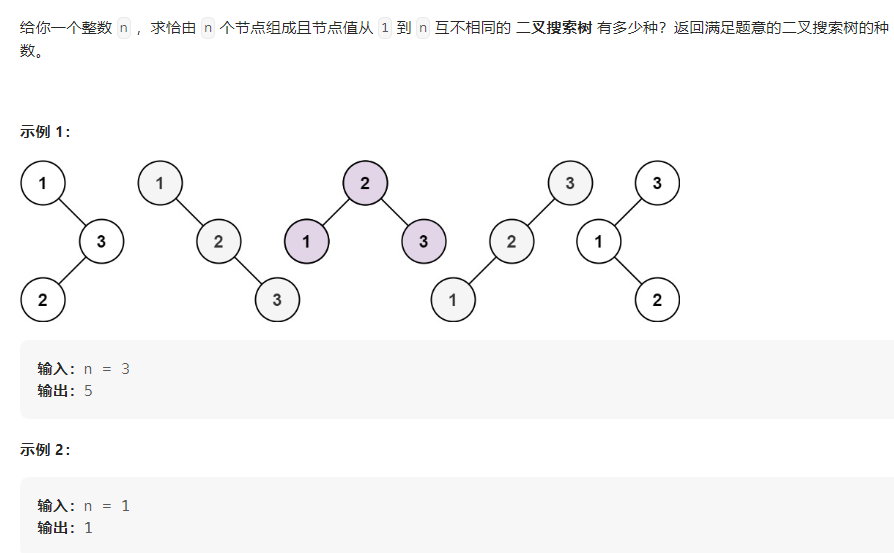
题解：定义两个函数，$G(n)$：表示$n$长度的序列能构成的不同二叉搜索树的个数，$F(i,n)$表示以$i$为根节点能构造的二叉搜索树的个数。当我们把一个序列一分为二时，例如：1，2，3，4，5，6，7；可知，如果求$F(3,7)$，则左子树为[1,2]，右子树为[4,5,6,7]，则有$F(3,7)=G(2)⋅G(4)$，总结此规律可以得到以下公式：$F(i,n)=G(i-1)⋅G(n-i)$，而$G(n)=\sum_{1}^{n}G(i-1)⋅G(n-i)$
时间复杂度$O(n^2)$,空间复杂度$O(n)$
1 2 3 4 5 6 7 8 9 10 11 func numTrees (n int ) int G := make ([]int , n + 1 ) G[0 ], G[1 ] = 1 , 1 for i := 2 ; i <= n; i++ { for j := 1 ; j <= i; j++ { G[i] += G[j-1 ] * G[i-j] } } return G[n] }
不同的二叉搜索树2
描述：与上一题大致相同，只不过需要返回的不是不同子树的个数，二是所有不同的子树，返回 []*TreeNode
题解：二叉搜索树的根节点的值大于左子树所有节点的值，小于右子树所有节点的值，且左右子树也都均为二叉搜索树。故对于[1……n]的序列，如若i为根节点，则[1……i-1]为左子树，[i+1……n]为右子树，此时划分的两个序列也都为一个长度更小的二叉搜索树。故用递归、回溯法来处理这道题。
定义generateTrees（start, end）来获取从start到end的二叉搜索树，递归出口为start>end。
时间复杂度$O(n^2)$,空间复杂度$O(n)$
1 2 3 4 5 6 7 8 9 10 11 12 13 14 15 16 17 18 19 20 21 22 23 24 25 26 func generateTrees (n int ) []*TreeNode if n== 0 { return nil } return helper(1 ,n) } func helper (start, end int ) []*TreeNode if start > end{ return []*TreeNode{nil } } allTrees := []*TreeNode{} for i:= start; i<=end; i++{ leftTrees := helper(start, i-1 ) rightTrees := helper(i+1 , end) for _, left:= range (leftTrees){ for _, right := range (rightTrees){ cur := &TreeNode{i,nil ,nil } cur.Left = left cur.Right = right allTrees = append (allTrees, cur) } } } return allTrees }
###二叉树路径总和3
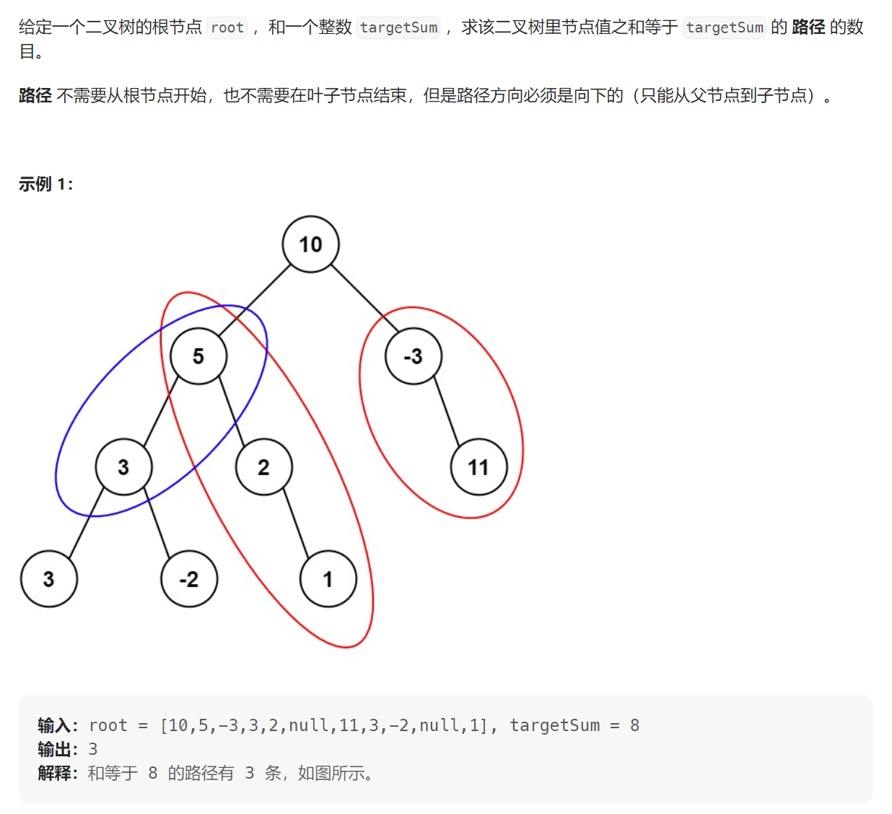
题解一：双重遍历，$O(n^2)$的时间复杂度，以每个节点为根节点深度遍历是否存在和为targetSum的子树。
1 2 3 4 5 6 7 8 9 10 11 12 13 14 15 16 17 18 19 20 21 func pathSum (root *TreeNode, targetSum int ) int if root == nil { return 0 } res := findPath(root, targetSum) res += pathSum(root.Left, targetSum) res += pathSum(root.Right, targetSum) return res } func findPath (root *TreeNode, targetSum int ) (res int ) if root == nil { return } if targetSum == root.Val{ res++ } res += findPath(root.Left, targetSum - root.Val) res += findPath(root.Right, targetSum -root.Val) return }
题解二：利用前缀和，设置一个map来存放前缀和以及该前缀和的个数。再通过一次遍历，来比较当前总和减去目标值的剩余值是否在前缀和中出现过，如果此剩余值出现过，则目标值也出现过，并记录出现的次数。时间复杂度$O(n)$
1 2 3 4 5 6 7 8 9 10 11 12 13 14 15 16 17 18 19 20 21 func pathSum (root *TreeNode, targetSum int ) (res int ) if root == nil { return 0 } preSum := map [int64 ]int {0 :1 } var dfs func (*TreeNode, int64 ) dfs = func (node *TreeNode, cur int64 ) if node == nil { return } cur += int64 (node.Val) res += preSum[cur - int64 (targetSum)] preSum[cur]++ dfs(node.Left, cur) dfs(node.Right, cur) preSum[cur]-- } dfs(root, 0 ) return }
如果您喜欢此博客或发现它对您有用，则欢迎对此发表评论。 也欢迎您共享此博客，以便更多人可以参与。 如果博客中使用的图像侵犯了您的版权，请与作者联系以将其删除。 谢谢 ！